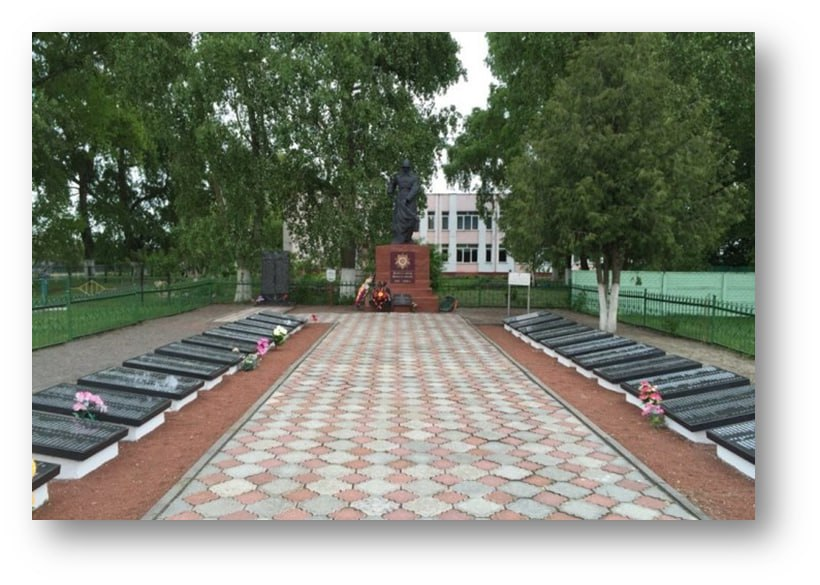

Братская могила находится в деревне Дуброва, на перекрёстке дорог Паричи-Калинковичи и
Дуброва-Гороховищи. Здесь покоятся 150 войнов
Брянской Краснознамённой стрелковой дивизии, которые отдали свои жизни в тяжёлых боях с 27
января по 5 февраля 1944 года. В том числе
здесь захоронены Герои Советского Союза Серго Гедеванович Чигладзе и Мартын Пантелеймонович
Тепляков.